Generales


OdontoTips - Generales
- Visita a tu odontólogo una vez al año para realizar controles (o cuando el profesional lo recomiende).
- Higieniza tus dientes 3 veces al día.
- Higienizate con una técnica de higiene, siguiendo una secuencia.
- Utiliza hilo dental, mínimo una vez al día.
- Procura tener un cepillo dental que se adapte a tus necesidades.
- Cambia tu celpillo dental cada 3 meses.
- Recuerda que el cepillado dental nocturno previo a ir a dormir, es el más importante (lo cual no significa que deba ser el único cepillado en el día).
- En lo posible, lava tus dientes recién 20 minutos después de haber comido, no antes.
- Si te interesa mantener el color de tus dientes, procura no consumir en exceso alimentos/bebidas con pigmentos (café, cigarrillo, té, vino, gaseosas sabor cola, etc.).
- Si no puedes evitar los alimentos mencionados en el punto anterior, procurá lavar tus dientes 20 minutos después de ingerirlos, o al menos enguajate la boca. La idea es prevenir que los pigmentos queden en la boca durante tiempos prolongados.
- Vigila las caries! Además de la visita anual recomendada, es conveniente que mires tu boca con cierta frecuencia, no tendrás el ojo clínico de un odontólogo, pero puedes llegar a ver alguna "mancha" o algo fuera de lugar.
- No solo debes buscar caries, sino también observar tu lengua y mucosas, donde también pueden aparecer patologías.
- Informate sobre cómo higienizar tu boca (con o sin ortodoncia) prótesis, placa de relajación, contención, coronas, implantes.
- Utiliza protectores bucales en deportes o actividades que lo ameriten.
- Utiliza tus contenciones o placas de relajación, según las indicaciones de tu odontólogo.
NUNCA lo hagas!
 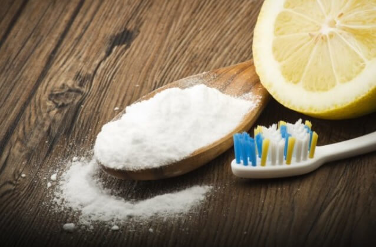
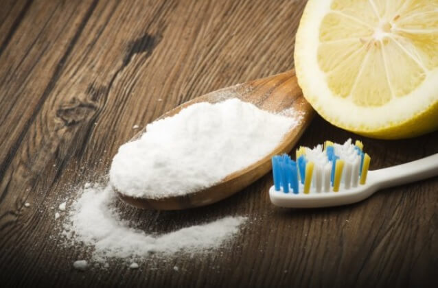
OdontoTips - NUNCA lo hagas!
- NO esperes a sentir dolor o "molestias" para acudir al odontólogo, es el peor error.
- NO cortes con tus dientes tus uñas, cinta adhesiva, plásticos. Desgastas tus dientes!
- NO muerdas bolígrafos, lápices, ni utilices tu boca para abrir cosas o como herramienta, los dientes no son para eso! (al igual que en el punto anterior, estás desgastando tus dientes).
- NO utilices ningún remedio casero por más "efectivo" o barato que sea, puedes ocasionar más daño del que ya tienes.
- NUNCA laves tus dientes con bicarbonato y/o limón para "blanquearlos" o "limpiarlos", no tienes idea del daño irreversible que estás ocasionando.
- NO te dejes llevar por tendencias en redes sociales, puedes poner en riesgo tu saludo bucal; además de que muchas de ellas suelen ser un engaño.
- NO te hagas blanqueamientos con ningún producto casero, ni con productos "para blanquear" que no estén aprobados por las organizaciones correspondientes y lo más importante, sin que tu odontólogo lo indique.
- NO existen blanqueamientos baratos, existen productos baratos que te terminarán saliendo aún más caro. Ponen en riesgo tu salud bucal, no funcionan o funcionan a corto plazo.
- NO tengas un cepillo dañado, recuerda que se cambia cada 3 meses.
- NO dejes de cepillarte tus dientes porque tus encías duelen o sangran, consulta a un profesional para que te revise.
- NO intentes realizar por tus propios medios ningún tratamiento dental, aunque suene ridículo, más gente de la que crees intenta realizarse blanqueamientos, limpiezas y hasta EXTRACCIONES por sí mismos.
- NUNCA te auto mediques, lo más probable es que no tomes la medicación acertada o que lo hagas en horarios y plazos incorrectos. Un profesional te medicará de acuerdo a tu necesidad y luego de analizar tu historia clínica.
- NO tomes analgésicos por más de 3 días, pueden aliviar el dolor, pero sin embargo tienen consecuencias en nuestro organismo.
- NO pegues con ningún tipo de pegamento: restauraciones, dientes sobre prótesis, ni coronas dentales, consulta con tu profesional para encontrar la solución adecuada.
- NO dejes pasar el hecho de rechinar o apretar los dientes (bruxismo), con el tiempo tendrá consecuencias, indefectiblemente.
- NO trates directamente con técnicos (mecánicos) dentales para realizar tus prótesis. Ellos son nuestra mano derecha y trabajamos en conjunto para devolver tu sonrisa, pero no están capacitados para diagnosticarte ni para indicarte ningún tipo de prótesis. Dicha actividad, es ILEGAL.
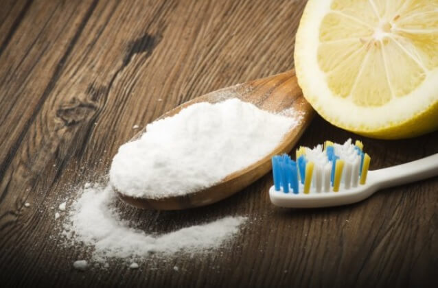
Técnicas de Higiene Oral
OdontoTips - Técnicas de higiene oral
Superficie externa de los dientes
Coloque las cerdas sobre la encía con un ángulo de 45 grados. Las cerdas deben estar en contacto con la superficie dental y la encía. Cepille suavemente la superficie dental externa de a 2 o 3 dientes con un movimiento circular. Mueva el cepillo al próximo grupo de 2 o 3 dientes y repita la operación.
Superficie interna de los dientes
Colocando el cepillo sobre la superficie interna de los dientes, mantenga un ángulo de 45 grados con las cerdas en contacto con la superficie dental y la encía. Cepille suavemente usando un movimiento circular y abarcando de a 2 o 3 dientes, luego pase al próximo grupo de 2 o 3 dientes, al igual que lo hizo en la superficie externa en el paso anterior. Incline el cepillo verticalmente detrás de los dientes frontales (de colmillo a colmillo), sólo en las caras internas. Haga movimientos de arriba hacia abajo.
Superficie masticatoria
Ponga el cepillo sobre la superficie masticadora y haga un movimiento suave de adelante haceia atrás.
Lengua
Cepille la lengua de atrás hacia adelante, realizando un movimiento de barrido en una sola dirección, para eliminar las bacterias que producen mal aliento. Enjuagarse la boca, puede utilizar colutorios o enjuagues bucales como accesorio. Nunca debe reemplazar al cepillado.
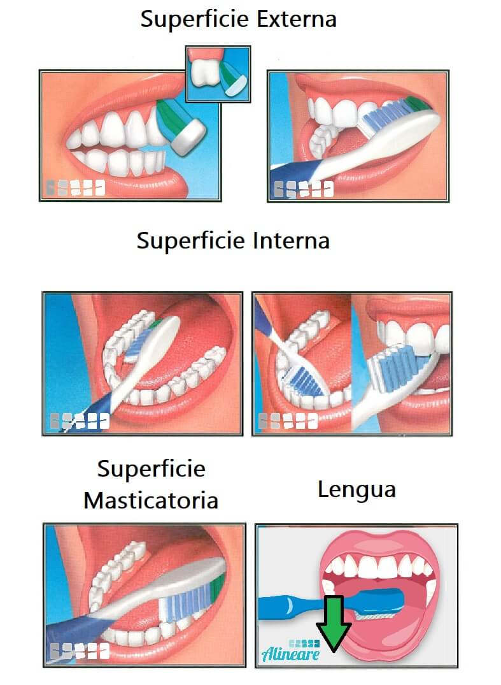
Higiene con Ortodoncia
OdontoTips - Higiene con Ortodoncia
Cuando se porta un aparato fijo de ortodoncia es fácil que algunos restos de comida queden aprisionados en los bordes de los brackets. También pueden resultar dañados los elásticos y alambres que ajustan el aparato cuando se ingieren trozos grandes de comida. Y además existe el riesgo que la ingestión de determinados alimentos dañen el esmalte expuesto o manchen los dientes.
En este sentido, los ortodoncistas hacen a los pacientes una serie de recomendaciones que deben seguir en tanto continúen con el tratamiento de ortodoncia fija:
- Evitar alimentos ácidos, dulces, duros o gomosos, así como las bebidas azucaradas.
- Tampoco se debe fumar, se aconseja evitar el alcohol y bebidas que como el café o el té pueden producir manchas en los dientes.
- Limpiar cada diente por separado, dedicando el tiempo necesario para ello y cepillando con suavidad ambas caras (interior y exterior), de arriba abajo y hacia los espacios interdentales.
- Es importante utilizar los cepillos interproximales para limpiar los bordes de los brackets y eliminar así cualquier resto de comida que haya podido quedar enganchado.
Todas estas recomendaciones son esenciales para evitar las consecuencias de la acumulación de placa bacteriana en torno a los brackets, pues de lo contrario aumentará el riesgo de que se produzca alguna caries e incluso una enfermedad periodontal, lo que no sólo puede afectar negativamente al tratamiento de ortodoncia, sino que puede llegar a obligar a interrumpirlo.
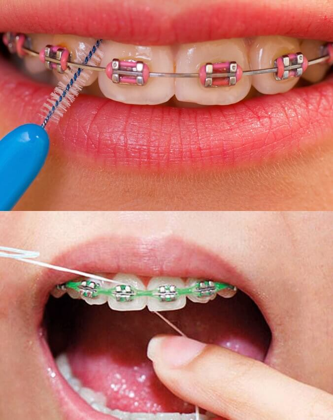
Higiene de Aparatos Removibles
OdontoTips - Higiene de Prótesis/Placas/Contenciones
Si usted es portador de una prótesis dental removible ó utiliza algún aparato de ortodoncia-ortopedia removible; habrá notado que con el uso y después de transcurrido un tiempo este dispositivo suele cambiar de color y a veces suele tener olory ser causa del mal aliento.
Este tipo de prótesis suele atrapar la placa bacteriana, como lo hacen los dientes naturales, por ello debe higienizarlo con cepillo y agua corriente por lo menos una vez al día.
Pero si desea que su prótesis dental removible ó su aparato de ortopedia-ortodoncia luzca con un excelente aspecto; es necesario utilizar una sustancia desodorizante y blanqueadora.
La sustancia de elección es el hipoclorito de sodio (lavandina) al 2% ó 3% de concentración, la forma más económica y eficiente de obtener esta sustancia es diluyendo 20 a 30 gotas de lanvandina tradicional en 100 centímetros cúbicos de agua corriente( un vaso de agua); colocar la prótesis en este recipiente y dejarla reposar en la solución al menos 10 minutos.
Con ello logrará desinfectar y limpiar las pigmentaciones de dicho aparato ó prótesis.
El paso siguiente es enjuagar con abundante agua corriente y cepillarla en forma enérgica para eliminar restos de comida, placa bacteriana y manchas. No colocar el aparato ó prótesis en la boca sin antes enjuagar con abundante agua corriente. El agua lavandina tradicional a esta concentración es sumamente irritante para la mucosa oral.
Usted puede higienizar su prótesis en forma efectiva con este procedimiento por lo menos día por medio. Así evitará la pigmentación de dicho aparato.
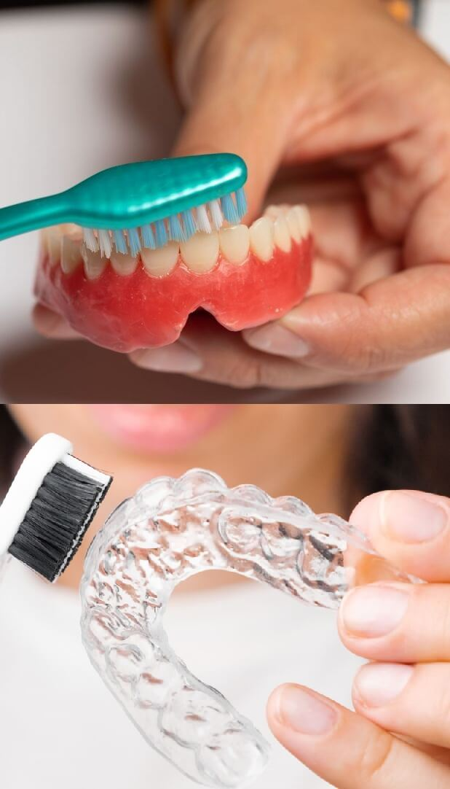
Higiene de Zonas Rehabilitadas
OdontoTips - Higiene de Zonas Rehabilitadas
Tomar conciencia sobre la importancia de la higiene de los implantes dentales es vital, ya que tanto los implantes como las coronas que van sobre los implantes dentales son unos tratamientos que le durarán muchos años.
El cuidado que hay que tener con ellos es similar al cuidado que debe tener con un diente natural.
Los cuidados que aconsejamos tener con los implantes dentales son dos:
1- LIMPIEZA DE LA CORONA SOBRE EL IMPLANTE DENTAL
Su limpieza será similar a la del resto de los dientes naturales: con el cepillo habitual (el mismo con el que limpiamos el resto de los dientes) mínimo tres veces al día o lo más aconsejable sería después de cada comida.
Lo importante es la constancia de dedicar un tiempo a limpiar los dientes y encía tomándolo como un hábito que salga de forma natural.
2- HIGIENE INTERDENTAL
El punto menos fácil de limpiar es la encía y los espacios interdentarios (entre corona y corona o entre corona y diente natural).
Para ello, a parte del cepillo habitual, tenemos diferentes herramientas de higiene dental como los cepillos interdentales, la seda dental e incluso irrigadores bucales.
También puede usarse la seda dental, pero en general es preferible el cepillo interdental porque el espacio que queda en la encía entre la corona del implante y la corona de un diente es amplio y se limpia mejor con un cepillito interdental.
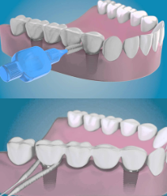
Cuidados Postoperatorios

OdontoTips - Cuidados Postoperatorios
INDICACIONES
- Mantené la gasa estéril aproximadamente 1 hora.
- En caso de profusa salida de sangre (hemorragia), colocar una gasa estéril mojada con agua sobre la herida y mantener bajo presión suave durante 10 minutos. En caso que persista el sangrado, no dudes en llamarnos.
- Colocá hielo envuelto en una compresa de tela sobre la piel de la zona intervenida con intervalos de 10 minutos, procurando no dañar la piel.
- Mantené la higiene bucal habitual, evitando la zona intervenida hasta que el odontólogo lo indique. NO HACER BUCHES AL ENJUAGARSE, dejar caer el agua suavemente a la hora de salivar.
- Si el profesional lo recomienda, podés utilizar colutorios antisépticos, sin realizar buches.
- La noche de la cirugía dormí con dos almohadas, para que la cabeza esté más alta que el resto del cuerpo.
- Es normal la presencia de saliva con algo de sangre durante la noche, las primeras 48 hs. posteriores a la cirugía
- Mantené reposo relativo las primeras 48 hs. posteriores a la cirugía.
DIETA
- Mantené una dieta blanda (y preferentemente fría) , como puré, flan, gelatina, yogurt y otros alimentos líquidos las primeras 24 hs. A partir del segundo día incorporar alimentos de mayor consistencia como pastas, pollo, pescado, verduras cocidas. Desde el tercer día ya podes incorporar paulatinamente el resto de los alimentos de tu dieta. Evitá bebidas con gas o alcohólicas en todo momento.
- Evitá todo tipo de alimentos particulados y semillas incluidos vegetales que puedan contenerlas (por ej. tomate, frutilla). En caso de ingerir helado, procurá que no tenga crocantes o partículas (almendras, granizado, nueces).
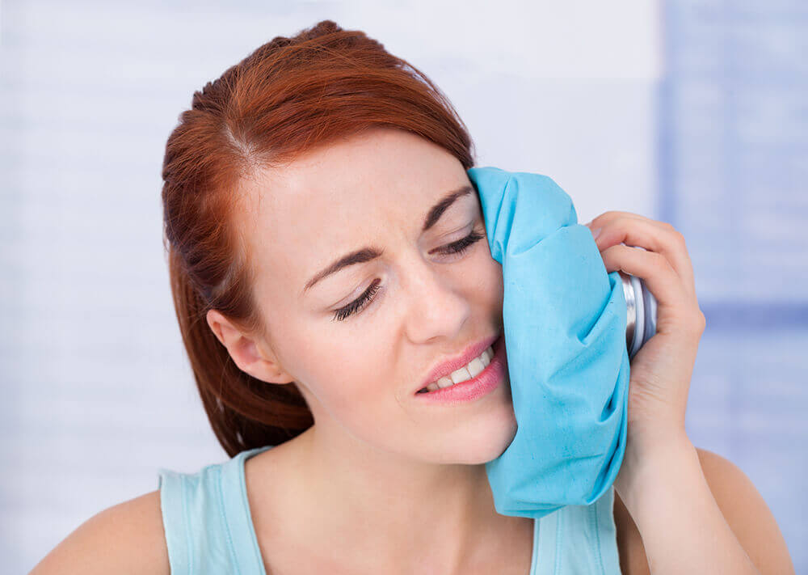
NO
- No fumar ni tomar mate o cualquier bebida con sorbete las primeras 48 hs.
- No exponerse a fuentes de calor como el sol, horno o calefacción.
- No ingerir ningún tipo de medicación que no sea indicada por el profesional.
- No hacer deportes, ni tareas que requieran esfuerzo por el tiempo recomendado por el profesional, de acuerdo a tu caso.
- No agacharse, en caso de necesitarlo, hacerlo siempre con la cabeza en alto.
RECORDÁ
- Volver a control y retiro de sutura (en caso que hubiese)
- Tomá la medicación prescripta por el profesional en tiempo y forma.
- En caso de dolor, infección o cualquier tipo de molestia, comunicate con tu odontólogo.
Mitos
OdontoTips - Mitos
-
Solo el azúcar causa caries
Si bien es verdad que el azúcar es el alimento que genera caries por excelencia, siempre debe tenerse en cuenta que por más que no consumamos azúcar de forma directa (o indirecta), debemos tener una correcta higiene, ya que otros alimentos también tienen potencial de producir caries. -
Las bebidas dietéticas son mejores para la salud bucal
Las bebidas dietéticas, si bien no tienen azúcar, son ácidas. La acidez producirá una desmineralización del esmalte, dañando al diente, y posteriormente posibles caries o sensibilidad dental. -
Los dientes blancos son dientes sanos
Se debe tener en cuenta que la coloración de los dientes, la mayoría de las veces, no indicará la salud de los mismos. De hecho, cuando la caries está en su etapa inicial, es de color blanco, así como otras patologías que afectan a los dientes y que comparten la característica de ser de color blanco. -
Los brackets son para jóvenes
Es común oír a pacientes adultos no realizarse tratamientos de ortodoncia porque ya “son grandes”. Lamentablemente, hay problemas dentales que sólo pueden ser solucionados con ortodoncia, sin importar la edad. -
No es importante la higiene en dientes de leche
Es de gran importancia adquirir hábitos saludables desde niño. El no higienizar correctamente los dientes de niños puede ocasionar severas infecciones, además de producir pérdidas dentales prematuras y hasta perjudicar a la dentición permanente. -
No es necesario usar hilo dental
El hilo dental es la mejor arma que tenemos para higienizar nuestros dientes en las caras proximales (caras a las que el cepillo dental no tiene acceso). En esta zona se originan caries que son difíciles de detectar a simple vista, llegando en Ortodonciamuchos casos a la pérdida total del diente. -
A cepillado más fuerte, mejor higiene
Un cepillado muy fuerte puede ocasionar pérdida de estructura dental y lesiones irreversibles en las encías. -
Las embarazadas pierden los dientes en los embarazos (por falta de calcio)
Durante el embarazo, debido a alteraciones hormonales, la mujer tiene mayor predisposición a tener gingivitis y caries, pero la pérdida de dientes se debe a no acudir al odontólogo a control y a una higiene deficiente, que en este momento de la vida, afectará mas de lo que lo hizo antes. -
Se heredan los dientes y las encías defectuosos
Se hereda la forma de los dientes y la posición de los mismos en los maxilares. Una predisposición genética a tener diversas patologías también podría existir, pero nunca a un grado tal de hacernos perder los dientes. En estos casos, el problema reside principalmente a una mala higiene oral. -
Después de comer, cepíllate tan pronto como puedas
No deberías, todo se debe a un cambio de pH que ocurre al comer. El mismo genera la desmineralización del esmalte dentario. Debes esperar 20/30 minutos a que esos minerales regresen al diente (remineralización), de lo contrario estarás eliminando esos minerales y nunca volverán a nuestro esmalte.
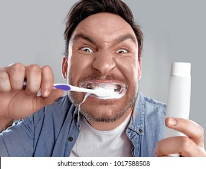
Enfermedades "Ocultas"
OdontoTips - Enfermedades "Ocultas"
-
Gingivitis
Es una enfermedad caracterizada por la inflamación y sangrado de las encías. Aunque en la mayoría de los casos sea visible el sangrado, hay casos en que el mismo no ocurre por diversos factores o si ocurre, es minimizado por parte del paciente. Esto puede agravar el cuadro y avanzar a otra enfermedad que veremos a continuación -
Periodontitis
Antiguamente llamada “piorrea”, suele ser la evolución de una gingivitis no tratada. No sólo tendremos sangrado e inflamación de las encías, sino que además produce la pérdida del hueso que sostiene nuestros dientes, produciendo movilidad dental o la pérdida de dientes. También es responsable de generar halitosis (mal aliento). Esta enfermedad es crónica y nunca curará por sí misma sin ser tratada. El paciente sólo piensa que necesita una “limpieza” y minimiza la enfermedad, más aún si son fumadores; ya que este hábito enmascara los síntomas de la enfermedad y no se ve realmente lo que está ocurriendo. -
Caries Proximales
Suelen ser un tipo de caries “silencioso” ya que el paciente no suele detectarlas hasta que las mismas adquieren un tamaño tal que son visibles o que ocasionan dolor e infección. La experiencia como odontólogos nos indica que gran cantidad de los dientes que terminan siendo restaurados, rehabilitados, tratados endodónticamente (tratamiento de conducto) o extraídos, fueron víctimas de este tipo de caries. Las dos mejores formas de evitarlas es acudiendo a tu odontólogo y USANDO HILO DENTAL! -
Muelas de juicio y dientes retenidos
Muchas veces los pacientes tienen dientes o molares retenidos, por lo cual no están a la vista. Éstos pueden ocasionar problemas si no se controlan y, de ser necesario, extraen a tiempo. Una muela de juicio mal posicionada puede estar “chocando” a un molar de adelante, causándole daño, que sólo será perceptible por el paciente cuando ya sea tarde y haya que optar por extraer ambos molares (como en la foto). Otro problema que pueden ocasionar dientes retenidos, es la generación de quistes o tumores; también caries en caso de que estén presentes e boca de forma parcial. Por todo esto es recomendable acudir a los controles y si el profesional lo indica, realizar la extirpación. -
Lesiones en la lengua y mucosas
Muchas veces aparecen lesiones en los tejidos blandos de la boca, los cuales no serán percibidos por los pacientes. Estas lesiones pueden ser simples manchas o quizás el inicio de algún tipo de cáncer u otra patología que se pueda manifestar en la boca, como HIV. Por ello te recomendamos mínimo una visita anual con el odontólogo para poder actuar a tiempo.
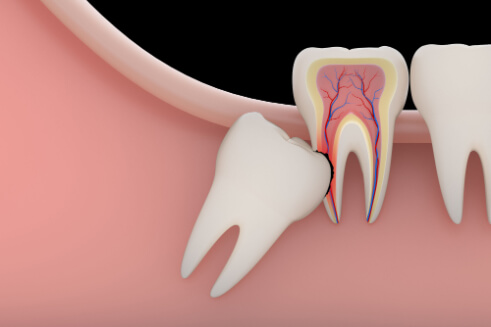
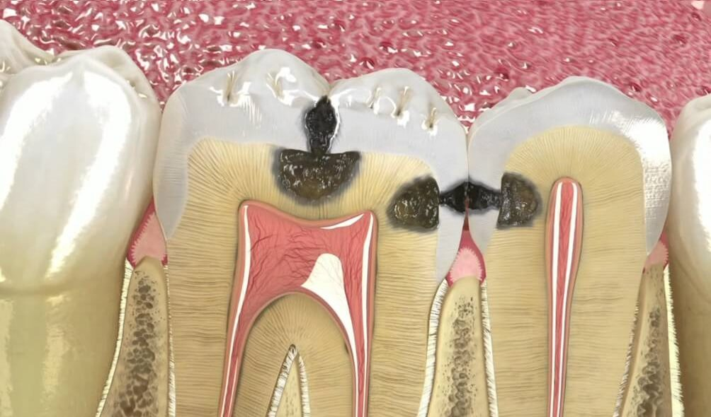